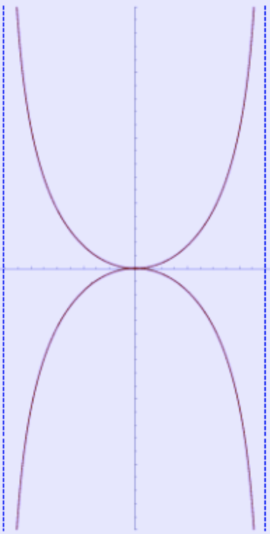

1 Kappa curve In geometry, the kappa curve or Gutschoven’s curve is a two-dimensional algebraic curve resembling the Greek letter ${\proselabel{kappa}{{κ}}}$ (kappa).

The kappa curve has two vertical asymptotes
For each point $( {\prosedeflabel{kappa}{{x}}} , {\prosedeflabel{kappa}{{y}}} )$ , using the Cartesian coordinate system it can be expressed as:
$$
{\proselabel{kappa}{{x}}} ^{2}\left( {\proselabel{kappa}{{x}}} ^{2}+ {\proselabel{kappa}{{y}}} ^{2}\right)= {\proselabel{kappa}{{a}}} ^{2} {\proselabel{kappa}{{y}}} ^{2}
\tag{1}\label{1}$$
Or, using parametric equations, for parameter ${\prosedeflabel{kappa}{{t}}}$ and ${\prosedeflabel{kappa}{{a}}}$ , it can be expressed as:
$$\DeclareMathOperator*{\argmax}{arg\,max}
\DeclareMathOperator*{\argmin}{arg\,min}
\begin{align*}
\idlabel{ {"onclick":"event.stopPropagation(); onClickSymbol(this, 'x', 'kappa', 'def', false, '')", "id":"kappa-x", "sym":"x", "func":"kappa", "localFunc":"", "type":"def", "case":"equation"} }{ {\mathit{x}} } & = \idlabel{ {"onclick":"event.stopPropagation(); onClickSymbol(this, 'a', 'kappa', 'use', false, '')", "id":"kappa-a", "sym":"a", "func":"kappa", "localFunc":"", "type":"use", "case":"equation"} }{ {\mathit{a}} }cos\left( \idlabel{ {"onclick":"event.stopPropagation(); onClickSymbol(this, 't', 'kappa', 'use', false, '')", "id":"kappa-t", "sym":"t", "func":"kappa", "localFunc":"", "type":"use", "case":"equation"} }{ {\mathit{t}} } \right)cot\left( \idlabel{ {"onclick":"event.stopPropagation(); onClickSymbol(this, 't', 'kappa', 'use', false, '')", "id":"kappa-t", "sym":"t", "func":"kappa", "localFunc":"", "type":"use", "case":"equation"} }{ {\mathit{t}} } \right)\\\eqlabel{ {"onclick":"event.stopPropagation(); onClickEq(this, 'kappa', ['a', 't', 'x'], false, []);"} }{}
\end{align*}
\tag{2}\label{2}$$
$$\DeclareMathOperator*{\argmax}{arg\,max}
\DeclareMathOperator*{\argmin}{arg\,min}
\begin{align*}
\idlabel{ {"onclick":"event.stopPropagation(); onClickSymbol(this, 'y', 'kappa', 'def', false, '')", "id":"kappa-y", "sym":"y", "func":"kappa", "localFunc":"", "type":"def", "case":"equation"} }{ {\mathit{y}} } & = \idlabel{ {"onclick":"event.stopPropagation(); onClickSymbol(this, 'a', 'kappa', 'use', false, '')", "id":"kappa-a", "sym":"a", "func":"kappa", "localFunc":"", "type":"use", "case":"equation"} }{ {\mathit{a}} }cos\left( \idlabel{ {"onclick":"event.stopPropagation(); onClickSymbol(this, 't', 'kappa', 'use', false, '')", "id":"kappa-t", "sym":"t", "func":"kappa", "localFunc":"", "type":"use", "case":"equation"} }{ {\mathit{t}} } \right)\\\eqlabel{ {"onclick":"event.stopPropagation(); onClickEq(this, 'kappa', ['a', 't', 'y'], false, []);"} }{}
\end{align*}
\tag{3}\label{3}$$
angle paremter ${\prosedeflabel{kappa}{{θ}}}$ , its equation is even simpler:
$$\DeclareMathOperator*{\argmax}{arg\,max}
\DeclareMathOperator*{\argmin}{arg\,min}
\begin{align*}
\idlabel{ {"onclick":"event.stopPropagation(); onClickSymbol(this, 'r', 'kappa', 'def', false, '')", "id":"kappa-r", "sym":"r", "func":"kappa", "localFunc":"", "type":"def", "case":"equation"} }{ {\mathit{r}} } & = atan\left( \idlabel{ {"onclick":"event.stopPropagation(); onClickSymbol(this, 'θ', 'kappa', 'use', false, '')", "id":"kappa-θ", "sym":"θ", "func":"kappa", "localFunc":"", "type":"use", "case":"equation"} }{ {\mathit{θ}} } \right)\\\eqlabel{ {"onclick":"event.stopPropagation(); onClickEq(this, 'kappa', ['θ', 'r'], false, []);"} }{}
\end{align*}
\tag{4}\label{4}$$
The kappa curve’s curvature ${\prosedeflabel{kappa}{{κ}}}$ is defined as follows:
$$\DeclareMathOperator*{\argmax}{arg\,max}
\DeclareMathOperator*{\argmin}{arg\,min}
\begin{align*}
\idlabel{ {"onclick":"event.stopPropagation(); onClickSymbol(this, 'κ', 'kappa', 'def', false, '')", "id":"kappa-κ", "sym":"κ", "func":"kappa", "localFunc":"", "type":"def", "case":"equation"} }{ {\mathit{κ}} }\left( \idlabel{ {"onclick":"event.stopPropagation(); onClickSymbol(this, 'θ', 'kappa', 'use', true, 'κ')", "id":"kappa-θ", "sym":"θ", "func":"kappa", "localFunc":"κ", "type":"use", "case":"equation"} }{ {\mathit{θ}} } \right) & = \frac{8\left( 3 - {sin\left( \idlabel{ {"onclick":"event.stopPropagation(); onClickSymbol(this, 'θ', 'kappa', 'use', true, 'κ')", "id":"kappa-θ", "sym":"θ", "func":"kappa", "localFunc":"κ", "type":"use", "case":"equation"} }{ {\mathit{θ}} } \right)}^{2} \right){sin\left( \idlabel{ {"onclick":"event.stopPropagation(); onClickSymbol(this, 'θ', 'kappa', 'use', true, 'κ')", "id":"kappa-θ", "sym":"θ", "func":"kappa", "localFunc":"κ", "type":"use", "case":"equation"} }{ {\mathit{θ}} } \right)}^{4}}{\idlabel{ {"onclick":"event.stopPropagation(); onClickSymbol(this, 'a', 'kappa', 'use', false, 'κ')", "id":"kappa-a", "sym":"a", "func":"kappa", "localFunc":"κ", "type":"use", "case":"equation"} }{ {\mathit{a}} }{\left( {sin\left( 2\idlabel{ {"onclick":"event.stopPropagation(); onClickSymbol(this, 'θ', 'kappa', 'use', true, 'κ')", "id":"kappa-θ", "sym":"θ", "func":"kappa", "localFunc":"κ", "type":"use", "case":"equation"} }{ {\mathit{θ}} } \right)}^{2} + 4 \right)}^{\frac{3}{2}}}\\\eqlabel{ {"onclick":"event.stopPropagation(); onClickEq(this, 'kappa', ['a', 'θ', 'κ'], true, 'κ', ['θ']);"} }{}
\end{align*}
\tag{5}\label{5}$$
Tangential angle ${\prosedeflabel{kappa}{{\phi}}}$ is defined as follows:
$$\DeclareMathOperator*{\argmax}{arg\,max}
\DeclareMathOperator*{\argmin}{arg\,min}
\begin{align*}
\idlabel{ {"onclick":"event.stopPropagation(); onClickSymbol(this, '$\\\\phi$', 'kappa', 'def', false, 'κ')", "id":"kappa-$\\\\phi$", "sym":"$\\\\phi$", "func":"kappa", "localFunc":"κ", "type":"def", "case":"equation"} }{ {\phi} }\left( \idlabel{ {"onclick":"event.stopPropagation(); onClickSymbol(this, 'θ', 'kappa', 'use', true, '$\\\\phi$')", "id":"kappa-θ", "sym":"θ", "func":"kappa", "localFunc":"$\\\\phi$", "type":"use", "case":"equation"} }{ {\mathit{θ}} } \right) & = -arctan\left( \frac{1}{2}sin\left( 2\idlabel{ {"onclick":"event.stopPropagation(); onClickSymbol(this, 'θ', 'kappa', 'use', true, '$\\\\phi$')", "id":"kappa-θ", "sym":"θ", "func":"kappa", "localFunc":"$\\\\phi$", "type":"use", "case":"equation"} }{ {\mathit{θ}} } \right) \right)\\\eqlabel{ {"onclick":"event.stopPropagation(); onClickEq(this, 'kappa', ['θ', '$\\\\phi$'], true, '$\\\\phi$', ['θ']);"} }{}
\end{align*}
\tag{6}\label{6}$$
2 Tangents via infinitesimals The tangent lines of the kappa curve can also be determined geometrically using differentials and the elementary rules of infinitesimal arithmetic. Suppose ${\proselabel{kappa}{{x}}}$ and ${\proselabel{kappa}{{y}}}$ are variables, while ${\proselabel{kappa}{{a}}}$ is taken to be a constant. From the definition of the kappa curve,
$$
{\proselabel{kappa}{{x}}} ^{2}\left( {\proselabel{kappa}{{x}}} ^{2}+ {\proselabel{kappa}{{y}}} ^{2}\right)- {\proselabel{kappa}{{a}}} ^{2} {\proselabel{kappa}{{y}}} ^{2}=0
\tag{7}\label{7}$$
Now, an infinitesimal change in our location must also change the value of the left hand side, so
$$
d\left( {\proselabel{kappa}{{x}}} ^{2}\left( {\proselabel{kappa}{{x}}} ^{2}+ {\proselabel{kappa}{{y}}} ^{2}\right)- {\proselabel{kappa}{{a}}} ^{2} {\proselabel{kappa}{{y}}} ^{2}\right)=0
\tag{8}\label{8}$$
Distributing the differential and applying appropriate rules,
3 Derivative If we use the modern concept of a functional relationship ${\proselabel{kappa}{{y}}} ( {\proselabel{kappa}{{x}}} )$ and apply implicit differentiation, the slope of a tangent line to the kappa curve at a point $( {\proselabel{kappa}{{x}}} , {\proselabel{kappa}{{y}}} )$ is :